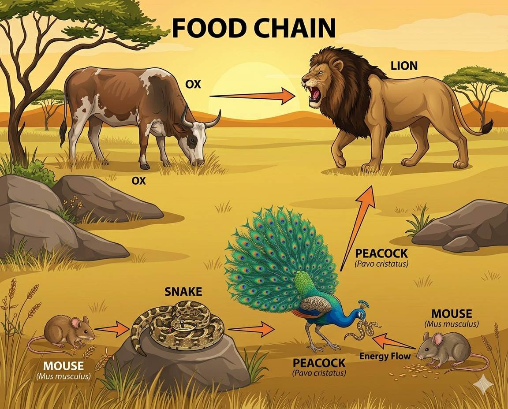

The Most Impossible Family in the Universe: What Shiva's Family Taught Me About Humanity
Most people look at Sanatana Dharma through rituals, festivals, temples and scriptures. I see it differently.
One image has always fascinated me : The family of Lord Shiva
At first glance, it looks divine and peaceful. But when I started observing it closely, I noticed something extraordinary.

Lord Shiva rides Nandi, an ox.
Maa Parvati rides a lion.
A lion is a natural predator of an ox.
Lord Ganesha's vehicle is a mouse.
Around Lord Shiva's neck rests a serpent.
A snake naturally preys on mice.
Lord Kartikeya rides a peacock.
A peacock is known to hunt and kill snakes.
If we look at this family through the lens of nature, every member is connected to another through conflict.
The lion threatens the ox. The snake threatens the mouse. The peacock threatens the snake.
By all laws of the natural world, this family should be in constant chaos.
Yet they sit together. They coexist. They thrive.
And perhaps that is the point.
I often wonder whether this image was designed not merely to represent gods but to teach humanity one of the deepest lessons of civilization:
Harmony is not the absence of differences; harmony is the ability to exist together despite them.
Today, we live in a world where people divide themselves over language, religion, caste, nationality, ideology, profession and even opinions.
We often expect others to think exactly like us before we accept them.
Nature itself does not work that way.
The family of Shiva reminds us that true unity is not created by similarity.
It is created by mutual respect.
Everyone retains their identity, yet chooses coexistence over conflict.
This idea resonates deeply with one of the most beautiful concepts of Sanatana Dharma:
वसुधैव कुटुम्बकम्
(The whole world is one family.)
Notice that the phrase does not say that the world is one type of person, one culture, one belief or one way of thinking.
It says family.
And every family contains differences.
- Different personalities.
- Different strengths.
- Different weaknesses.
- Different perspectives.
Yet a family survives because its members support one another rather than compete for dominance.
In many ways, the Shiva family is a symbolic representation of an ideal society.
- The strongest protect the weakest.
- Differences are acknowledged rather than erased.
- Potential conflicts are transformed into cooperation.
- Diversity becomes a source of strength rather than division.
As an engineering student, I often find myself searching for logic behind things.
The more I study systems, networks, and human organizations, the more I realize that the most successful systems are not those with identical components.
They are the ones where different components work together toward a common purpose.
Perhaps this is why the image of Shiva's family continues to inspire me.
It is not just a religious image.
It is a blueprint for society.
A reminder that peace is not achieved when everyone becomes the same.
Peace is achieved when everyone learns to coexist.
In a world increasingly divided by differences, the family of Shiva silently teaches a lesson that humanity still struggles to learn:
We do not need to be alike to belong together.
After all, if a lion, an ox, a mouse, a snake and a peacock can live under one roof, perhaps humanity can too.
Final Reflection
The more I think about this image, the more I feel that its message extends far beyond religion.
It speaks about families.
It speaks about societies.
It speaks about nations.
And perhaps most importantly, it speaks about humanity itself.
We live in an era where disagreements are amplified, identities are polarized, and differences are often treated as barriers.
Yet one ancient image quietly suggests a different possibility.
Coexistence is not weakness.
Diversity is not a threat.
Harmony is not uniformity.
The Shiva family reminds us that strength comes not from eliminating differences, but from learning to live with them.
Perhaps that is why this image continues to fascinate me.
Not because it represents perfection,
but because it represents possibility.
The possibility that beings who are naturally opposed can still choose understanding over conflict.
The possibility that differences can coexist without becoming divisions.
The possibility that humanity can learn what nature itself seems unwilling to teach.
We do not need to be the same to belong together.
And maybe that is one of the greatest lessons hidden within the family of Lord Shiva.
Thanks!
← Back to Portfolio